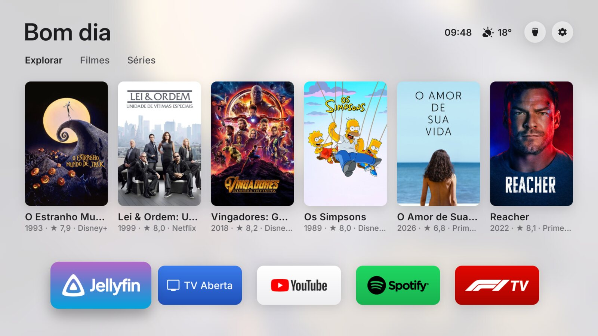
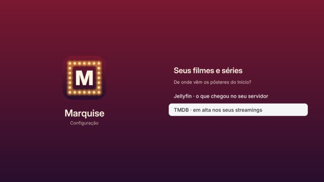
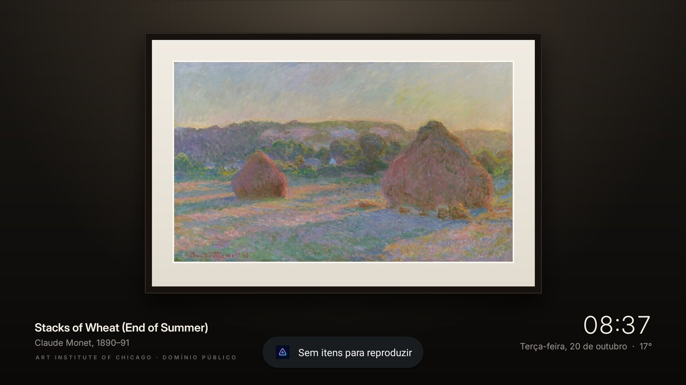

Seus filmes e séries no Início da TV
Um Início para Google TV e Android TV sem anúncios nem fileiras patrocinadas: o que está em alta nos seus streamings (ou o que chegou no seu Jellyfin), seus apps nas cores de cada marca, a hora e o clima. Grátis e de código aberto.

Instalar em 4 passos
Uns cinco minutos, só com o controle. Funciona em TVs com Google TV ou Android TV, Android 12 ou mais novo (TCL, Sony, Philips, Hisense, Chromecast com Google TV…).
Ative a depuração da TV
Na TV, vá em Configurações → Sistema → Sobre e aperte OK 7 vezes em Build do Android TV OS, até aparecer “Você é um desenvolvedor”. Depois, em Configurações → Sistema → Opções do desenvolvedor, ligue a Depuração USB.
Por quê: é assim que o Marquise troca o Início e desliga os apps de propaganda sem root. Tudo volta ao normal quando você quiser.
Instale o Downloader
Na Play Store da TV, procure Downloader (o da AFTVnews, ícone laranja) e instale. Ao abrir, permita que ele instale apps quando pedir.
Baixe o Marquise
No Downloader, digite o código 9141955 e aperte Go. O download começa sozinho; quando terminar, aperte Instalar.
Se o código não funcionar, digite vitoramaral10.github.io/marquise e aperte Baixar o Marquise nesta página.
Abra o Marquise e siga o setup
Escolha de onde vêm os filmes e séries: o TMDB (em alta nos seus streamings) ou o seu Jellyfin. Depois a sua cidade e Ativar o Marquise. A TV pergunta “Permitir depuração USB?”: marque Sempre permitir e confirme.

O que vem junto
Abre no streaming certo
Cada pôster diz onde passa (Netflix, Prime Video, Disney+, Max, Globoplay…) e abre direto no app.
Seus apps, do seu jeito
Segure OK num app para mover, tirar ou desinstalar. Cada um com a cor da marca.
Hora e clima
No topo, e a previsão das próximas horas logo abaixo. Claro de dia, escuro depois do pôr do sol.
Atualiza sozinho
Quando sai versão nova, as configurações avisam e um OK instala.

Perguntas
Dá para voltar ao Início original?
Sim. No Marquise, Configurações → Início → Original. O Início de fábrica, a tela de descanso e todos os apps voltam como estavam. Nada é desinstalado.
Como pego a chave do TMDB?
É grátis. Crie uma conta em themoviedb.org, vá em Configurações → API, peça uma chave e copie a “Chave da API”. Para não digitar tudo com o controle, use o app Google TV no celular: ele tem teclado e dá para colar.
Precisa de root ou de computador?
Não. Só a depuração da TV ligada (passo 1), que o próprio Marquise usa de dentro da TV.
É seguro? Ele coleta algo?
Não tem conta, propaganda nem rastreamento. Ele só fala com o TMDB ou o seu Jellyfin, com o Open-Meteo para o clima, com o museu para as pinturas e com o GitHub para atualizações. O código é aberto (GitHub).
E se der algum problema?
Se o Marquise travar, a TV volta sozinha para o Início original. Para relatar algo, abra uma issue no GitHub.